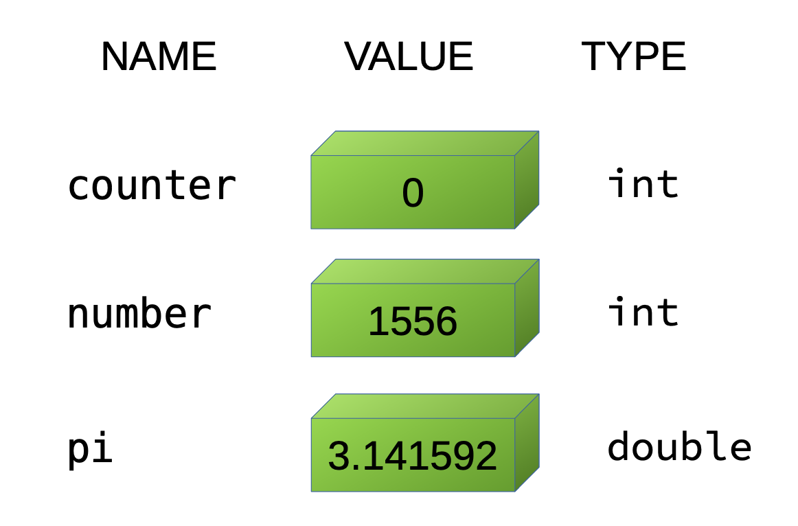
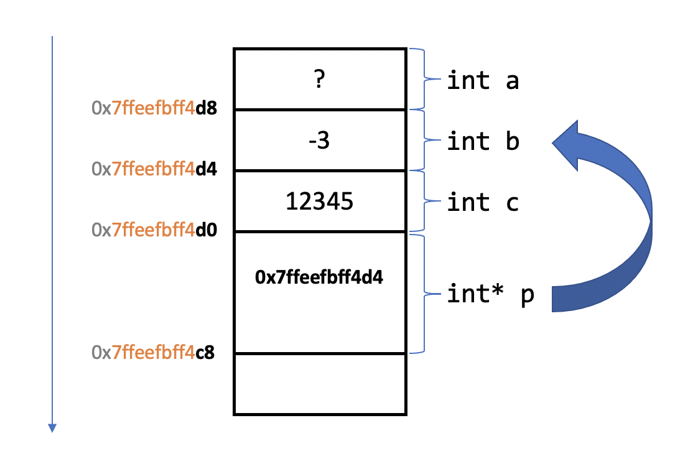
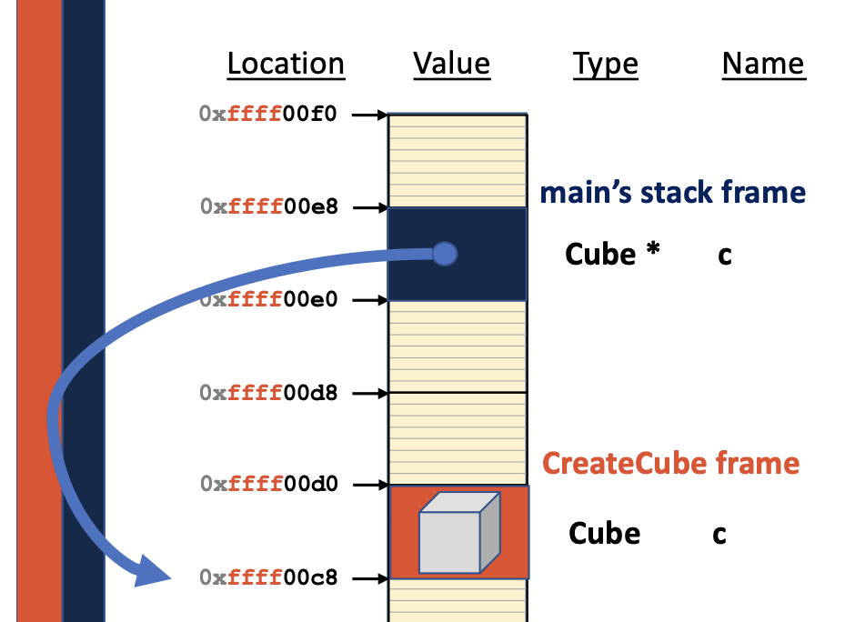
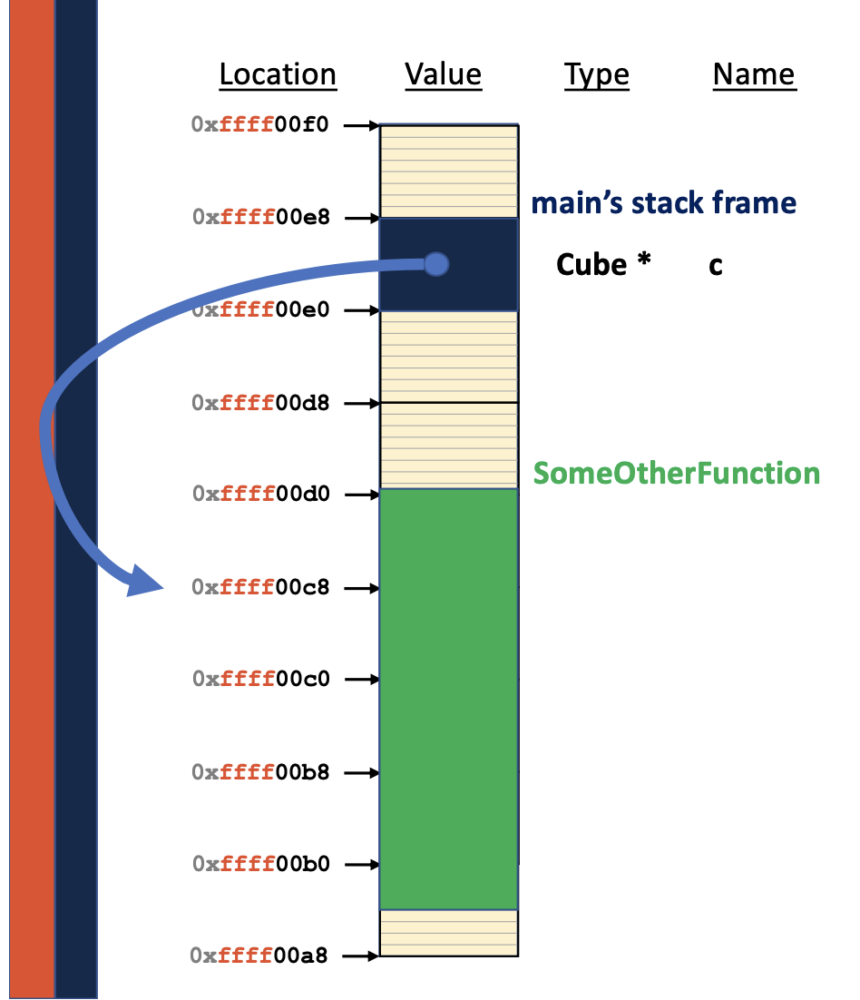
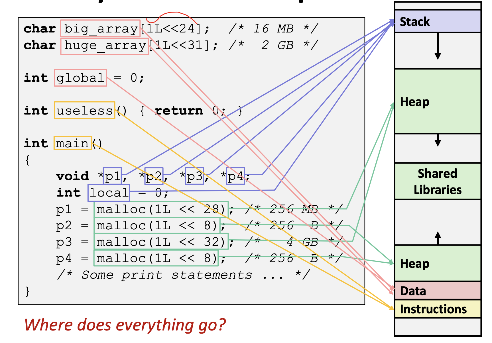
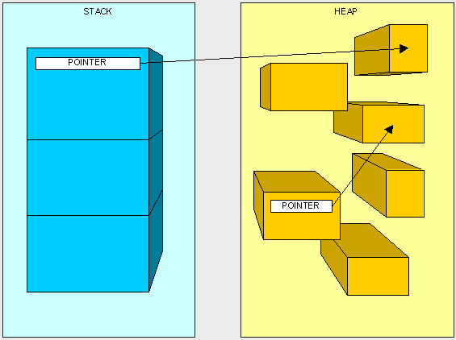

Accessing objects in Memory
如果熟悉计算机结构应该知道， 程序的数据实际上是放在内存内。 其中最重要的就是 “对内存中数据的读写”
任何在运行时占有内存的实体(entity) 叫 对象(object), 其中包括 data(variable, constants), statemens(code and functions).
其中， 可以修改的被成为 variable 变量 , 一旦产生后就不能修改的叫 constant 常量。
一般而言有两个种访问对象的方法
- identifier/reference (variable/constant name) 标识符
- pointer (memory address) 指针
Pointer and Reference
A reference is a alias to variable's memory. The reference itself does not have the memory. The reference will simply behave as the varaible it refers to. Some points about references:
- need to refer to an object when you initialize it.
- can't be re-refered to any other objects once it is initialized.
- mutating a reference is mutating the aliased variable
https://docs.microsoft.com/en-us/cpp/cpp/references-cpp?view=msvc-160
T s; // Declare the object.
T& sRef = s; // Declare the reference.
A pointer is a variable that has its own memory, and it can store the address of the object it "pointing to".
- has a value (memory address) 一个盒子， 里面存储着地址值。
- can dereference to access object it points to 指向一个对象的地址（但对象可能不存在）
- powerful and dangerous.
&v // the address of object v
*p // dereference operator (the object the address p)
*(&v) == v //
还有如果某个类自带成员(member),既可以是 class 也可以 struct
v->getVolume(); //same as
(*v).getVolumn();
想一想为什么有用？ 因为 v->node->node 的原式是 (*(*v).node).node
Deep Copy and Shallow Copy
Note that you can't make copies of reference!!! You can only make copies of the objects that has pointers.
- Deep Copy
- Copy the content inside an object, e.g.
auto ... = *p - Create another seperated copy.
- Copy the content inside an object, e.g.
- Shallow Copy
- Copy the memory address instead of the content, e.g.
auto ... = p - The identical object
- Copy the memory address instead of the content, e.g.
Declaration Statement and Memory Allocation
本章上是变量/常量的声明。
const double pi = 3.14159;
double radius = 5;
通常情况下， 这些数据会被存储到一个叫 memory 上。 由于 RAM 叫 (random access memory), 这意味着你可以通过 内存地址， 快速地访问你想要的数据。
Variable as a Bounding Box
上图你可以知道， 每个 variable 包含 name, type, value. 为了方面理解， 你可以理解有一个容量有限的容器。

这里的容量有限非常有用，你必须明白每个常量/变量的容量是有限的。Memory Chunk
其中内存如下， 一般而言，每行 (每个 byte) 是 8 bit 左右。 Typically, each address location holds 8-bit (i.e., 1-byte) of data. 为什么内存的最小数据长度是 8-bit 呢？ 因为 8 位足够表示ASCII 。 这是由于历史原因决定的。 https://en.wikipedia.org/wiki/ASCII 可见是7位的。
如果你仍然不相信 1 byte = 8 bits （即 每行 8 bits） ， 可以运行
sizeof(int *)
在64位系统 结果返回 8 ， 即 int* 这个类型是 8 Bytes.
在32位系统 结果返回 4 。
32位的系统至少需要4个内存位置 (即 4 bytes) 来存储一个连续的对象/数据。 A 32-bit system typically uses 32-bit addresses. To store a 32-bit address, 4 memory locations are required.
同理， 如果64位系统就需要更多8个内存位置(即 8 bytes) (8x8=64) .
因为我们已知 最小的 1 Byte 为 8 bits (一般是指针的大小)。
如果每一个内存地址都代表 1 Byte 的结尾地址， 那么对于 32位系统而言，最多可以表示 ， 也就是最大 Bytes (因为 1 个位置 是 1 Byte) 。 那么 32位系统可以索引的最大地址为 。 注意， 此时的 GB 的 B 是 Byte ， 也就是内存最小的 Chunk.
Stack and Memory Allocation
Stack 的 Memory Layout.
int main() {
int a;
int b = -3; int c = 12345;
int *p = &b;
return 0;
}
注意到这个 Stack 的地址是从大到小的， 指针总是指向 Object 的起始位置， 因此在此图中的表示即为 块的底部（你反过来看就是真正的 Stack 了， 因为 p 在最上面）。

Stack Frames and Functions
All variables (including parameters to the function) that are part of a function are part of that function’s stack frame. 所有函数的变量(包括参数) 都是被放在 stack frame 中。
A stack frame and function :
- Inside a function, we need access to:
- arguments
- local variables
- When the function terminates, need to retrieve
- return value
- register values from previous function
- previous stack pointer
- return address (to return to the caller)
All of these are located on the stack. Thus, a small region on the stack is associated with the invocation of each function. This is called a stack frame. http://www.cse.unsw.edu.au/~cs1917/12s2/lect/17_Memory4.pdf
Example 1 : What happens here?
例子： 如果返回 stack frame 中的 local variable 内存地址。
Cube *CreateCube() {
Cube c(20); // local variable
return &c; // return the address of a local variable in a stack frame.
}
int main() {
Cube *c = CreateCube();
SomeOtherFunction();
double v = c->getVolume();
double a = c->getSurfaceArea();
return 0;
}
如果需要调用 CreateCube() 函数,

如果调用新的函数 SomeOtherFunction();, 可以看到原来的 stack frame 被覆盖了。
（因为已经返回到 main function stack frame 了)。 然后原来的指针就不知道指向什么了。

Heap and Memory Allocation
As programmers, we can use heap memory in cases where the lifecycle of the variable exceeds the lifecycle of the function. 用 Heap 的话， 变量的生命周期往往非常长。
Allocating
The only to creat heap memory is with the use of the new keyword. Forget mallc(), that is the old thing from C stuff.
- Allocate memory
- Construct object
- Return a memory address
int *ptr_add = new int;
To allocate an array, you need new type[size]
int *x = new int[3];
The size of the array here is not fixed.
INFO: allocating arrays (with constructor)
Note that the constructor will be called on each element in the array!
It is recommended to use <vector>. Array is not recommended.
Releasing
The only way to free heap memory is with use of the delete keyword. Forget free(), that is the old thing from C stuff.
- Destruct object (a default destrcutor)
- Release memory according to a memory address.
delete ptr_add;
// delete (*ptr_dd); // is incorrect as (*ptr_add) is an object!
To allocate an array, you need to tell the system to delete all arrays (instead of the first one?)
delete[] x;
INFO: releasing arrays (with destructor)
Note that the destructor will be called on each element in the array!
Be careful of duplicating delete....
int main(int argc, const char * argv[]) {
Circle *c1 = new Circle(1); // Radius as 1
Circle *c2 = c1; // address of (*c1)
c2->setRadius(10);
delete c2;
delete c1; // heap object has been released...
return 0;
}
/* Expected:
malloc: *** error for object 0x100531380:
pointer being freed was not allocated
*/
Memory Layout in C++ Runtime
可以参考笔记 https://courses.engr.illinois.edu/cs225/fa2020/resources/stack-heap/
- Automatic Variables (a function's scope, local varaiables including pointers, and caller's return address that allows the program be back to the caller after completing a subroutine/function)
- 本地变量(有 scope 限制), 返回地址(recursion), 自动deallocate
- Dynamic Memory Allocation (programmers' direct manipulation on memory space, keywords invovles
malloc/newto allocate andfree/deletteto free up)- 程序员手动allocate, 手动 deallocate, 不一定有 scope 限制。
- Good Practice: 在 手动 deallocate 之后， 马上让 pointer 变成 nullptr 来表明原来的位置是不再允许访问了。 否则， 这个 pointer 还是会指向原来的内存地址。 ```cpp int createINT(){ int a = new int; *a = 100; return a; }
int main(int argc, const char argv[]) { int a = createINT(); std::cout << *a << std::endl; // set the freed pointer to nullptr to // unable access to the original freed position. delete a; a = nullptr; return 0; }
```
代码对应区域

思考题：What is stack overflow (also called “stack smashing”)?
Memory Leak and Smart Pointer
由于使用 malloc/new 的时候， 需要 手动deallocate, 否则在 Heap 中的空间是不会被释放的。 如果忘记 手动deallocate ， 在一些大型项目上， 会造成 Heap 非常大！
Memory is never automatically reclaimed, even if it goes out of scope. Any memory lost, but not freed, is considered to be “leaked memory”.
为了解决潜在的 Memory Leak 问题 (其他程序都有 Garbage Collection了， C++ 怎么能没有呢？)， 最新 C++ 引入了 Smart pointer. 用法可以参考微软的开发者文档 https://docs.microsoft.com/en-us/cpp/cpp/smart-pointers-modern-cpp?view=msvc-160
还有 https://docs.microsoft.com/en-us/cpp/cpp/how-to-create-and-use-unique-ptr-instances?view=msvc-160 和 https://docs.microsoft.com/en-us/cpp/cpp/how-to-create-and-use-shared-ptr-instances?view=msvc-160
Heap Deallocation
如果你学过比较基础的计算机数据结构， 你会明白 Heap 是比较混乱的结构。

在 手动 deallocate 的时候， 常见问题是 Heap 碎片化 (causing fragmentations in the heap).你感兴趣可以研究以下 heap allocation scheme that try to pick the “best” spot for you . 这里不深入。